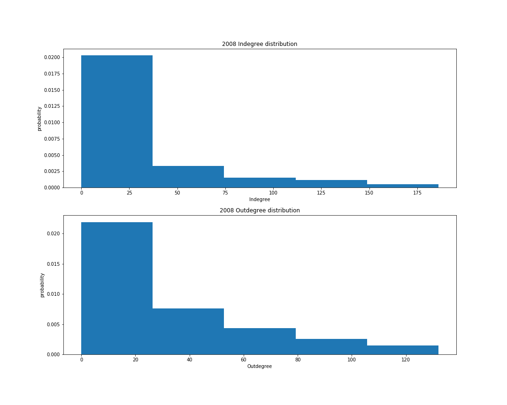
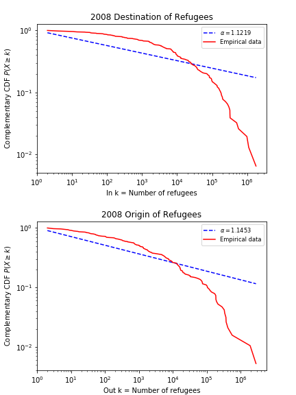

Worldwide, more than 68 million people are forcibly displaced.
About 40 million of them are internally displaced, 25 million are refugees and 3 million are asylum-seekers.
Source: UNHCR
This project analyzes data on migration patterns of persons of concern. Our aim is to create new insights that are useful for aid organizations and policy makers alike.
Asylum-Seeker: A person seeking international protection. Once this protection is granted, the person is recognized as a refugee.
Refugee: A person who had to flee their home country due to persecution.
Source: Amnesty International
If not otherwise specified, the analyses show the movement of refugees based on UNHCR data.
In our analysis of refugee migration patterns, we collected data and represented it as a network that you can see on the map. Countries are connected if a sufficiently high number of people flee from one country to another. You can change the threshold for "sufficiently high" with the threshold slider. Similarly, you can change the year you want to look at.
The countries are colored according to their Fragile States Index where red indicates a high fragility and blue represents stability. If you hover on countries, you can see their Human Development Index (HDI) value (and rank) as well as their Fragile States Index (FSI) value (and rank).
Use the arrows at the top to look at different analyses.
The degree distribution shows the probabilty with which a randomly picked country has a specific indegree (outdegree). As degrees are not continuous, they are binned.
The plot shows us the probability with which a chosen country has more than a specific number x refugees coming in (leaving). A power law distribution would mean that the y-value changes proportional to the x-value. By using the logarithmic values on both, we should get a straight line. This is not the case here as you can see in the plot.
There is a visible correlation between the measures eigenvector centrality and closeness centrality. This is not surprising as both are centrality measures.
The correlation matrix allows you to see between which measures there is a positive or negative correlation.
As we can see the HDI correlates with the indegree centrality. As the HDI measures long-term development of countries, it is not surprising to see that countries with a high HDI value get refugees from a lot of different countries.
Similarly to the HDI, it is not surprising that stable countries, i.e. countries with a low FSI, host refugees from many different countries.
One might expect a similar correlation between HDI and outdegree centrality. HDI, however, mostly measures long-term development, e.g. the life expectancy. Short-term developments such as the outbreak of a war are not necessarily visible in the HDI which explains large numbers of refugees for countries with fairly high HDI values.
The FSI takes questions specific to refugees and IDPs into account, so that we can also see a correlation when we look at the outdegree.